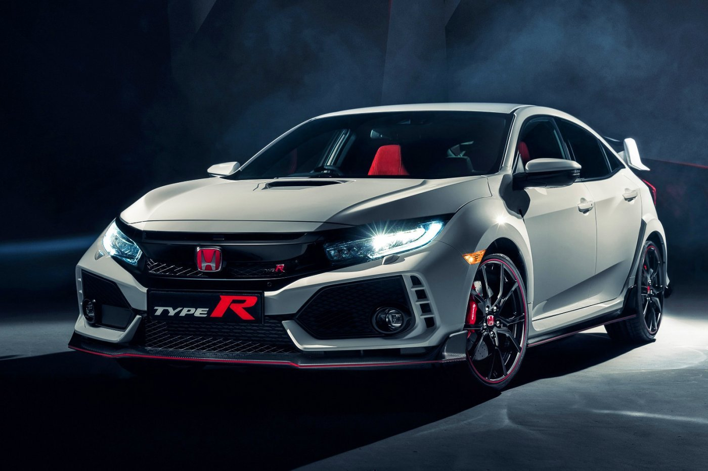
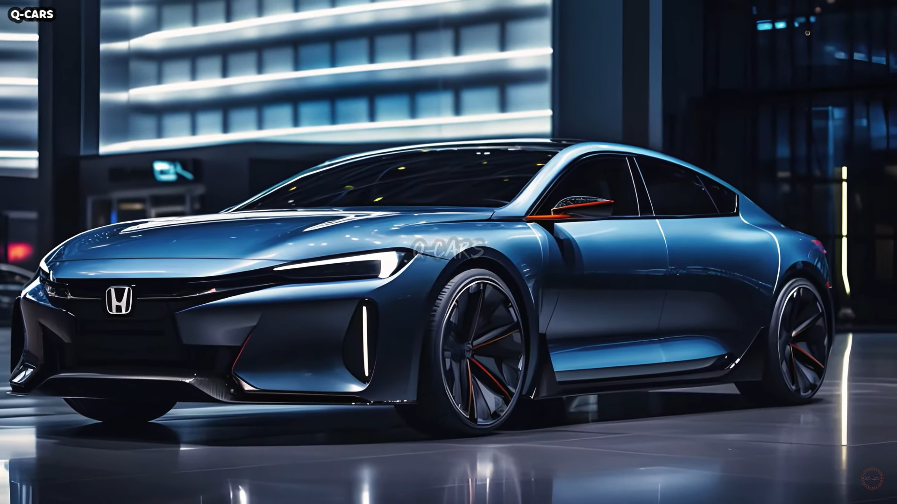
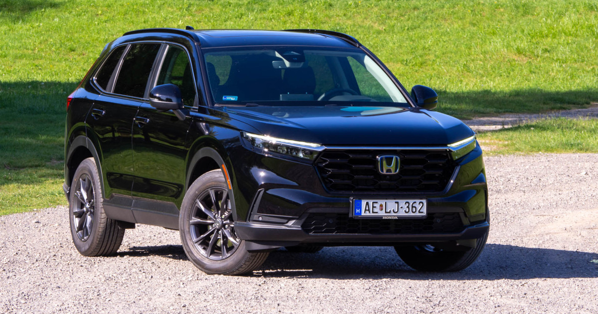
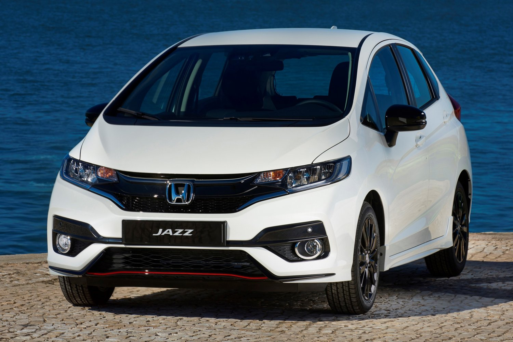

Honda Types
Másik oldal

Honda Civic
A Honda Civic egy sportos megjelenésű, megbízható és üzemanyag-hatékony autó. Kiváló városi közlekedéshez, kényelmes utastérrel és modern technológiával. Többféle motorváltozatban elérhető, így mindenki megtalálhatja a számára megfelelő példányt.

Honda Accord
A Honda Accord egy prémium középkategóriás szedán, amely kiemelkedő kényelmes és tágas belső teret kínál. Modern technológiai megoldásaival és elegáns diájnjával ideális választás hosszú távú utazásokhoz.

Honda CR-V
A Honda CR-V egy tágas, családbarát crossover, amely kiemelkedő komfortos és üzemanyag-hatékonyságot biztosít. A sportos megjelenés mellett remek vezetési élményt és biztonsági funkciókat kínál.

Honda Jazz
A Honda Jazz egy kompakt, gazdaságos városi autó, amely kiemelkedő manőverezhetőséggel és tágas belső térrel rendelkezik. A praktikus kialakítás és a kiváló üzemanyag-hatékonyság ideálissá teszi mindennapi használatra. A megbízhatóság és a modern technológiai megoldások révén a Jazz remek választás a városi közlekedéshez.